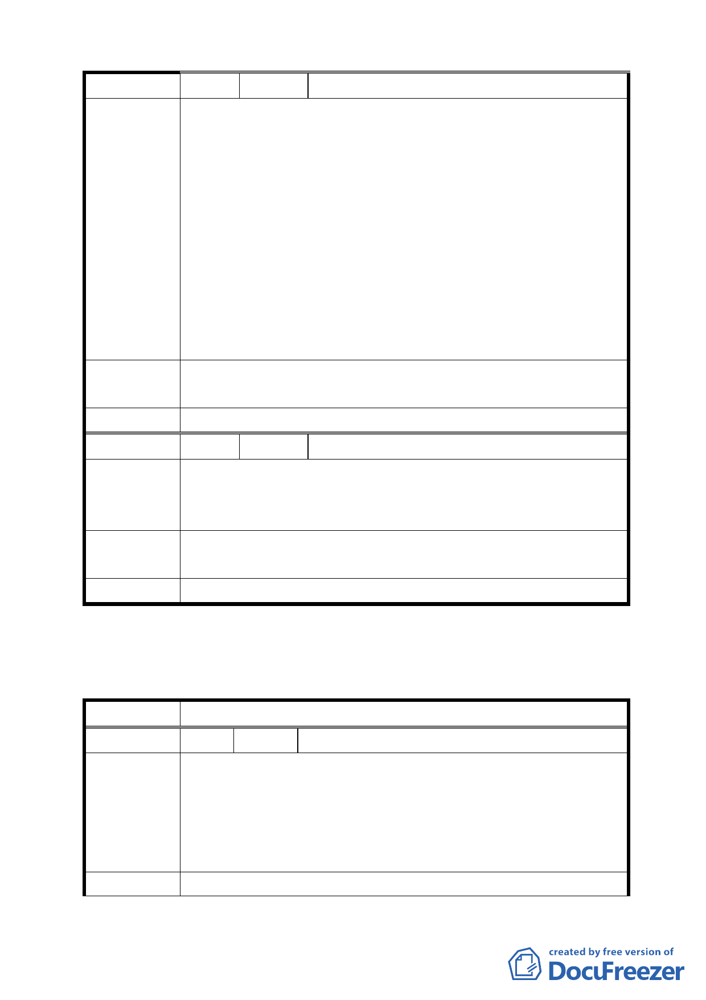

編 號 4 陳情人 北投區奇岩社區發展協會－萬建國
1. 依主要計劃說明貳、原分區使用：變更原農業區為住宅區
（建蔽率為 40％，容積率為 160％）。計畫人口 5230 人，
但依現行計畫建物許可高至 32 公尺(估計 10 層樓高)人口
數 5000 人似有低估。請確認建蔽率及容積率，重新計算
人口數，以為整體計畫之依據。
陳 情 理 由 2. 本計畫為原 95 年 4 月主計畫之修正案該案歷經多次都市
計畫審議審查，但發現現主計畫諸多與原審議內容背離，
如申明本區為自然生態社區，原案保留之中崙窄溝及其腹
地，竟然規劃為住宅用地，破壞生態之設計(R16、R15)。
另交通規劃亦背離原計畫構想等等如 17 號道路，本區外
之三合街未拓寬。
建
議
辦
法
建請承辦單位將多次原審議會所蒐集之建議事項重新納入考
量。
委員會決議 依市府公展案，照案通過。
編 號 5 陳情人 李培華等 70 人
集中建設易於管理及維護，又使用率高，又促進敦親睦鄰場
陳 情 理 由 合，長期球技切磋技術傳授更易凝聚里民參與匯集推展社區
公益活動，增進運動人口，倍增健康又快樂家庭。
建議辦法
建議本計畫案公園用地、綠地用地內之公共設施應規劃建設
網球場六面。
委員會決議 依市府公展案，照案通過。
「擬定臺北市北投區奇岩新社區細部計畫案」臺北市都市
計畫委員會公民或團體所提意見綜理表
案 名 擬定臺北市北投區奇岩新社區細部計畫案
編 號 １ 陳情人 古秀珍
1.R-14 區北邊道路位於中崙仔溝上，與原計畫結論保留中崙
仔溝為生態區不符合。
陳 情 理 由 2.本區樹木樹齡約 30 年以上，請優先移植本區原有樹木，而
非砍伐後再花錢種新樹苗，以節省資源，不要浪費 30 年樹
木成長的時間。
建 議 辦 法 請聘請有名、有成效的生態學者專家參與設計。
9